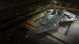

Макс. скорость / с форсажем
256 / 345 м/с
Шесть орудийных креплений, из них четыре больших, крепкая защита и распределитель энергии класса 6, рассчитанный на всю батарею. В обмен на грузовую универсальность исходного Python у Python Mk II сделали ставку на огневую мощь. По манёвренности в дуэли он немного уступает кораблю Fer-de-Lance, зато он универсальнее и живучее в затяжных боях в местах добычи ресурсов (RES) и зонах конфликта (CZ).

Корабль получает оценку пригодности от 1 до 100 в полностью улучшенной сборке для этой роли, в сравнении со всеми другими кораблями той же роли. См. методику оценки кораблей.
Python Mk II — ответ Faulcon DeLacy на вопрос «Какой средний корабль лучше для боя?». От обычного Python здесь осталось имя: это специализированный боевой корабль с четырьмя большими креплениями, что обычно бывает только у крупных кораблей, двумя средними для вспомогательного оружия и шестью внешними креплениями. Корпус и распределитель энергии рассчитаны на всё это оснащение.
В конструкции предусмотрели только шесть дополнительных отсеков и ни одного военного. За эти шесть отсеков конкурируют все защитные модули (генератор щита, батареи щита, усилители корпуса и усилители модулей), поэтому поставить всё сразу не выйдет. Если правильно подобрать баланс, этот средний корабль будет сражаться почти наравне с крупными.
Зоны конфликта высокой интенсивности, опасные места добычи ресурсов (Hazardous RES), задания на уничтожение пиратов и бои с игроками. Везде, где важнее долго вести огонь и выдерживать ответные атаки, чем возить грузы или далеко прыгать.
Четыре преимущества Mk II среди средних боевых кораблей:
Шесть дополнительных отсеков и ни одного военного — главное ограничение: не получится одновременно поставить большой щит, несколько батарей и много модулей на усиление корпуса. Корабль Fer-de-Lance быстрее разворачивается в дуэли, а Corvette и Cutter заметно превосходят Mk II по живучести и огневой мощи. Его козыри — баланс и доступ к средним площадкам: он почти не уступает крупному кораблю в задачах, но обходится значительно дешевле и требует меньше времени на получение.
Четыре больших крепления и распределитель класса 6 дают почти такую же огневую мощь, как у крупных кораблей, при средней площадке и без требований к рангу. Шесть дополнительных отсеков и отсутствие военных ограничивают живучесть.
Оценка 90/100 складывается из боевых критериев, упорядоченных по важности. У каждого критерия свой вес (доля от 100); корабль получает часть баллов по сравнению со всеми соперниками. В сумме они дают итоговую оценку.
| Критерий | Баллы | Почему столько |
|---|---|---|
| Орудийные крепления | 30/30 | Четыре больших и два средних крепления. Такой набор из шести орудий обычно встречается на крупных кораблях: по вооружению он превосходит Krait Mk II (3L 2M), а по длительному урону — Fer-de-Lance с его единственным огромным орудием. По огневой мощи это один из лидеров среди средних. |
| Распределитель энергии | 10/10 | Распределитель класса 6 рассчитан на одновременную стрельбу из шести орудий и форсаж. Это крупнейший класс распределителя для средних кораблей; его хватает для четырёх больших орудий. С модулем класса A и улучшением «Ускоренная зарядка» вся батарея может стрелять без пауз. |
| Щит | 13/15 | Базовый щит на 335 МДж после улучшений достигает ~1,100+ МДж: нужен усиленный двухконтурный генератор и три усилителя с «Усиленной конструкцией» на шести внешних креплениях. Хорошо для среднего корабля, но у Cutter, Corvette и Anaconda запас щита заметно больше. |
| Броня и внутренние отсеки | 10/15 | Базовые 280 ед. брони вырастают до ~1,800+ с улучшениями. Шесть дополнительных отсеков (6·4·3·2·1·1) и отсутствие военных — жёсткий предел: щит, батареи и усилители корпуса делят одни и те же отсеки. Именно это ограничивает живучесть. |
| Манёвренность | 17/20 | Корпус массой 450 т в базе разгоняется до 256/345 м/с, а с «Грязной настройкой двигателей» форсаж даёт ~400 м/с. Этого хватает, чтобы держать дистанцию и драться вблизи, но Fer-de-Lance и Federal Assault Ship быстрее разворачиваются в дуэли. |
| Оснащение и универсальность | 10/10 | На шести внешних креплениях помещается полный комплект защиты: три усилителя щита, дипольные отражатели, теплоотводная катапульта и точечная оборона. Меньшие средние корабли так не оснастить. Корпус стоит ~64.7 млн кр., а ранг и разрешение не нужны, поэтому это самый доступный боевой корабль высшего класса. |
| Взвешенный итог | 90/100 | Совпадает с итоговой оценкой пригодности корабля для этой роли. |
Вес каждого критерия отражает редакционную расстановку приоритетов роли, а не формулу игры. Длина полосы показывает, какую долю баллов по критерию заработал корабль. Длинные полосы дали основную часть оценки, короткие показывают, где он потерял баллы. См. методику оценки кораблей.
Во всех таблицах корабли оцениваются именно для боя и разделены по размеру посадочной площадки. Столбец Орудийные крепления показывает набор креплений, определяющий, какое оружие можно установить. Оценка пригодности по шкале 1–100 едина для всего сайта.
| Корабль | Класс | Орудийные крепления | Плюсы и минусы | Оценка |
|---|---|---|---|---|
| Fer-de-Lance | Средняя | 1H 4M | Выше оценка; манёвренность; крепленияБроня | 93 |
| Krait Mk II | Средняя | 3L 2M | Крепления; броняРаспределитель энергии | 90 |
| Python Mk II этот | Средняя | 4L 2M | — этот корабль (для сравнения) | 90 |
| Mamba | Средняя | 1H 2L 2S | Распределитель; крепленияНиже оценка; броня | 89 |
| Alliance Chieftain | Средняя | 2L 1M 3S | Манёвренность; броняНиже оценка; щит | 88 |
| Alliance Challenger | Средняя | 1L 3M 3S | Броня; щитНиже оценка; манёвренность | 86 |
| Corsair | Средняя | 3L 3M | Распределитель; универсальностьНиже оценка; манёвренность | 85 |
| Federal Assault Ship | Средняя | 2L 2M | Распределитель; манёвренностьНиже оценка; щит | 84 |
| Python | Средняя | 3L 2M | Распределитель; универсальностьНиже оценка; манёвренность | 83 |
| Federal Gunship | Средняя | 1L 4M 2S | Распределитель; броняНиже оценка; манёвренность | 82 |
| Alliance Crusader | Средняя | 1L 2M 3S | Распределитель; броняНиже оценка; манёвренность | 80 |
| Federal Dropship | Средняя | 1L 4M | Броня; крепленияНиже оценка; манёвренность | 76 |
| Krait Phantom | Средняя | 2L 2M | Универсальность; манёвренностьНиже оценка; броня | 74 |
В списке 13 боевых кораблей для средних площадок. Лидер — Fer-de-Lance (93). Все они используют те же площадки, что и Python Mk II, поэтому это его прямые конкуренты.
| Корабль | Класс | Орудийные крепления | Плюсы и минусы | Оценка |
|---|---|---|---|---|
| Federal Corvette | Большая | 2H 1L 2M 2S | Выше оценка; крепления; распределительЩит | 98 |
| Imperial Cutter | Большая | 1H 2L 4M | Выше оценка; распределитель; щитМанёвренность | 91 |
| Anaconda | Большая | 1H 3L 2M 2S | Распределитель; щитНиже оценка; манёвренность | 88 |
| Imperial Clipper | Большая | 2L 2M | Манёвренность; распределительНиже оценка; крепления | 79 |
| Type-10 Defender | Большая | 4L 3M 2S | Крепления; броняНиже оценка; манёвренность | 78 |
Среди боевых кораблей для больших площадок (оценено 5) лидирует Federal Corvette (98). Им нужны площадки и бюджет побольше. По характеристикам они сильнее, но относятся к другому классу площадки.
| Корабль | Класс | Орудийные крепления | Плюсы и минусы | Оценка |
|---|---|---|---|---|
| Kestrel Mk II | Малая | 3L 2S | Крепления; универсальностьНиже оценка; броня | 85 |
| Vulture | Малая | 2L | Манёвренность; щитНиже оценка; броня | 80 |
| Cobra Mk V | Малая | 3M 2S | Универсальность; крепленияНиже оценка; распределитель | 78 |
| Imperial Courier | Малая | 3M | Манёвренность; щитНиже оценка; броня | 70 |
| Viper Mk IV | Малая | 2M 2S | Броня; распределительНиже оценка; манёвренность | 66 |
| Diamondback Explorer | Малая | 1L 2M | Универсальность; манёвренностьНиже оценка; броня | 65 |
| Viper Mk III | Малая | 2M 2S | Манёвренность; крепленияНиже оценка; броня | 63 |
| Diamondback Scout | Малая | 2M 2S | Универсальность; броняНиже оценка; щит | 60 |
| Cobra Mk III | Малая | 2M 2S | Манёвренность; распределительНиже оценка; щит | 58 |
| Eagle Mk II | Малая | 3S | Манёвренность; крепленияНиже оценка; щит | 55 |
| Imperial Eagle | Малая | 1M 2S | Манёвренность; крепленияНиже оценка; универсальность | 54 |
| Cobra Mk IV | Малая | 2M 3S | Крепления; броняНиже оценка; манёвренность | 44 |
| Sidewinder Mk I | Малая | 2S | Манёвренность; универсальностьНиже оценка; крепления | 40 |
Среди боевых кораблей для малых площадок (оценено 13) лидирует Kestrel Mk II (85). Они дешевле и используют меньшие площадки. По характеристикам уступают Python Mk II и относятся к другому посадочному классу.
Python Mk II недёшев: один корпус стоит около 64.7 млн кр. Но ни ранг, ни разрешение не нужны: его может купить любой пилот, у которого хватает денег. Среди лучших боевых кораблей он самый доступный: не нужно повышать ранг ни во флоте Федерации, ни во флоте Империи. Нужны только кредиты.
Оснащение модулями класса A и инженерные улучшения вместе поднимают стоимость выше 110 млн кр. Это разумная цена за почти такую же огневую мощь, как у крупного корабля, при доступе к средним площадкам. В итоге он заметно дешевле, чем открываемые за ранг корабли Corvette или Cutter.
В отличие от Corvette (Федерация: контр-адмирал) и Cutter (Империя: герцог), Python Mk II можно взять просто за кредиты. Подойдёт, если нужен первоклассный боевой корабль без прокачки флотского ранга.
Faulcon DeLacy предлагает Python Mk II за ARX в готовой комплектации «Stellar» и отдельно как корпус с доступом Stored. Для готовых сборок стандартное правило: штатные модули продаются за 0 кр., их нельзя отправить на склад или перевезти. Улучшения штатных основных модулей на месте не лишают корабль бесплатного выкупа.
В готовой сборке не снимайте штатные модули. Заполняйте только свободные отсеки и улучшайте основные модули на месте.
| Комплект | Python Mk II (доступ к готовой комплектации) |
|---|---|
| В комплекте | Оснащённый корпус, набор обвесов, окраска |
Улучшать штатный модуль на месте безопасно: бесплатный выкуп сохраняется. Если его заменить, он пропадёт за 0 кр. Стройте сборку вокруг штатного оснащения, не заменяя его.
Три варианта боевой сборки для Python Mk II с учётом его ограничения: шесть дополнительных отсеков и ни одного военного. Один защитный модуль занимает место другого. Здесь вместо множества батарей предпочтение отдано прочному двухконтурному щиту и усилителям. Начальная сборка собирается покупкой модулей с упором на выживаемость. Класс A — базовый вариант для боёв в местах добычи. Последний вариант — типовая боевая схема с инженерными улучшениями для тяжёлого среднего корабля.
| Отсек | Начальная · только покупка | Класс A · без улучшений | С инженерными улучшениями | Примечания |
|---|---|---|---|---|
| Орудийные крепления | ||||
| Большое 1 | 3E Импульсный лазер (на подвижном подвесе) | 3C Многоствольное орудие (на подвижном подвесе) | G5 Перегрузка + Коррозионные снаряды | Основное большое многоствольное орудие. Одного орудия с коррозионными снарядами хватает, чтобы снизить сопротивление брони цели для всей батареи. |
| Большое 2 | 3E Импульсный лазер (на подвижном подвесе) | 3C Многоствольное орудие (на подвижном подвесе) | G5 Перегрузка + Автозарядка | Второе большое многоствольное орудие. «Перегрузка» повышает урон в секунду, а «Автозарядка» позволяет стрелять без пауз на перезарядку. |
| Большое 3 | 3C Многоствольное орудие (на подвижном подвесе) | 3C Лучевой лазер (на подвижном подвесе) | G5 Эффективный + Тепловой отвод | Большой лучевой лазер снимает щиты. «Тепловой отвод» отводит тепло и не даёт перегреться при длительной стрельбе. |
| Большое 4 | 3C Многоствольное орудие (на подвижном подвесе) | 3C Лучевой лазер (на подвижном подвесе) | G5 Эффективный + Тепловой отвод | Второй лучевой лазер с тепловым отводом. Вместе они быстро снимают щиты, не нагревая корабль. |
| Среднее 1 | 2F Многоствольное орудие (на подвижном подвесе) | 2F Многоствольное орудие (на подвижном подвесе) | G5 Перегрузка + Автозарядка | Вспомогательное многоствольное орудие. «Перегрузка» и «Автозарядка» дают непрерывный урон. |
| Среднее 2 | 2F Многоствольное орудие (на подвижном подвесе) | 2F Многоствольное орудие (на подвижном подвесе) | G5 Перегрузка + Автозарядка | Второе среднее многоствольное орудие повторяет первое. Вместе они ведут непрерывный кинетический огонь после падения щита. |
| Внешние крепления | ||||
| Крепление 1 | 0A Усилитель щита | 0A Усилитель щита | G5 Усиленная конструкция + Суперконденсаторы | Первый усилитель щита. «Усиленная конструкция» заметно увеличивает запас прочности двухконтурного щита в МДж. |
| Крепление 2 | — | 0A Усилитель щита | G5 Усиленная конструкция + Суперконденсаторы | Ещё один усилитель с «Усиленной конструкцией»: самый дешёвый способ заметно повысить прочность щита. |
| Крепление 3 | — | 0I Пусковая установка дипольных отражателей | G1 Увеличенный боезапас (без экспериментального эффекта) | Необязательно, низкий приоритет: увеличенный боезапас даёт больше залпов дипольных отражателей. Дипольные отражатели мешают огню орудий на подвижном подвесе и турелей. |
| Крепление 4 | — | 0I Теплоотводная катапульта | G1 Увеличенный боезапас (без экспериментального эффекта) | Необязательно, низкий приоритет: увеличенный боезапас добавляет заряды теплоотвода. Сбрасывает тепло при скрытном ходе и помогает восстановить охлаждение «Тепловым отводом». |
| Крепление 5 | — | 0I Точечная оборона | G1 Увеличенный боезапас (без экспериментального эффекта) | Необязательно, низкий приоритет: увеличенный боезапас добавляет выстрелы. Точечная оборона сбивает подлетающие ракеты и торпеды. |
| Крепление 6 | — | 0A Усилитель щита | G5 Усиленная конструкция + Суперконденсаторы | Третий усилитель с «Усиленной конструкцией» занимает последнее крепление и дополняет защиту щита. |
| Основные модули | ||||
| Обшивка | Лёгкий сплав | Военный композит | G5 Усиленная конструкция + Усиленная обшивка | |
| Силовая установка | 6E Силовая установка | 6A Силовая установка | G5 Перегрузка + Распределение тепла | Питает шесть орудий, большой щит и батареи. «Перегрузка» даёт запас мощности, а «Распределение тепла» уменьшает нагрев. |
| Маневровые двигатели | 6E Маневровые двигатели | 6A Маневровые двигатели | G5 Грязная настройка двигателей + Форсированные двигатели | Класс A + «Грязная настройка двигателей» позволяют кораблю массой 450 т держать нужную дистанцию в ближнем бою. |
| Рамочно-сместительный двигатель (FSD) | 5E Рамочно-сместительный двигатель (FSD) | 5A Рамочно-сместительный двигатель (FSD) | G3 Увеличенная дальность (без экспериментального эффекта) | Класс A помогает быстрее перемещаться между боями. Дальность улучшена только до G3: боевому кораблю рекордный прыжок не нужен. |
| Система жизнеобеспечения | 4E Система жизнеобеспечения | 4D Система жизнеобеспечения | G5 Снижение массы (без экспериментального эффекта) | Класс D уменьшает массу, а улучшение Снижение массы снижает её ещё сильнее. Система жизнеобеспечения не имеет экспериментального эффекта. |
| Распределитель энергии | 6E Распределитель энергии | 6A Распределитель энергии | G5 Ускоренная зарядка + Сверхпроводящие каналы | Поставьте класс A в первую очередь: четыре больших орудия и форсаж быстрее всего истощают запас распределителя класса 6. |
| Сенсоры | 5E Сенсоры | 5D Сенсоры | G5 Снижение массы (без экспериментального эффекта) | Класс D и «Снижение массы» облегчают корабль: для боя дальность сенсоров не нужна. |
| Топливный бак | 4C Топливный бак | 4C Топливный бак | (нет чертежа улучшения) | Штатный бак имеет фиксированный объём, недоступный для инженерных улучшений. |
| Дополнительные отсеки | ||||
| Класс 6 | 6E Генератор щита | 6C Генератор двухконтурного щита | G5 Усиленный + Быстрая зарядка | В отсеке класса 6 стоит двухконтурный щит: он быстро восстанавливается под огнём. «Усиленный» повышает запас прочности в МДж, а «Быстрая зарядка» ускоряет восстановление рухнувшего щита, чтобы быстрее вернуться в ближний бой. |
| Класс 4 | 4E Усилитель корпуса | 4D Усилитель корпуса | G5 Усиленная конструкция + Усиленная обшивка | Улучшенный по чертежу «Усиленная конструкция» усилитель корпуса — самый дешёвый способ существенно повысить эффективную броню. Свободный отсек позволяет поставить модуль не больше класса 4. |
| Класс 3 | — | 3D Усилитель корпуса | G5 Усиленная конструкция + Усиленная обшивка | Второй модуль с «Усиленной конструкцией» — усилитель корпуса (HRP). Прочность брони складывается линейно, так что вторая пластина напрямую повышает живучесть. |
| Класс 2 | — | 2D Усилитель модулей | (нет чертежа улучшения) | Усилитель модулей распределяет урон от пробивших корпус попаданий между внутренними модулями. Не улучшается у инженеров. |
| Класс 1 | — | 1A Батарея щита | G4 Специализированная + Управление потоком | Необязательно, низкий приоритет: «Специализированная» снижает всплеск нагрева и потребления энергии. В экстренной ситуации быстро восстанавливает часть щита. |
| Класс 1 | — | 1D Усилитель модулей | (нет чертежа улучшения) | В последний малый отсек ставится второй Усилитель модулей для защиты основных модулей. Не улучшается у инженеров. |
| Планировщики и экспорт | ||||
| Открыть в Coriolis | открыть | открыть | открыть | Открывает coriolis.io одним нажатием. |
| Открыть в EDSY | открыть | открыть | открыть | Открывает edsy.org одним нажатием. |
| Скопировать SLEF | Копирует исходный экспорт оснащения корабля (SLEF) для выбранного варианта. | |||
Без военных отсеков дополнительный отсек класса 6 почти всегда занимает генератор щита. Остальные нужно поделить между усилителями и батареями щита. Сборки с упором на корпус или щит отличаются лишь распределением этих шести отсеков.
Купите корпус и оставьте штатный «Лёгкий сплав» для обшивки: пока не тратьтесь на броню. Установите самый крупный генератор щита, который поместится в отсек класса 6, и один усилитель корпуса: в первую очередь нужна живучесть.
На четыре больших крепления поставьте два импульсных лазера и два многоствольных орудия на подвижном подвесе, а в оба средних — такие же многоствольных орудия. До инженерных улучшений подвижный подвес прощает промахи.
Поставьте один усилитель щита в первое внешнее крепление. Остальные внешние крепления и дополнительные отсеки пока оставьте пустыми: даже этой минимальной сборки достаточно для боёв в местах добычи.
Что в первую очередь менять на тяжёлом среднем истребителе:
Здесь заполняются и все внешние крепления: три усилителя щита, дипольные отражатели, теплоотводная катапульта и точечная оборона. Их дополняют модуль 1A (батарея щита) и усилитель модулей. Вместе они дают многослойную защиту, которую трудно пробить.
На корабле с четырьмя большими креплениями всё решает распределитель. Поставьте класс A и «Ускоренную зарядку», прежде чем браться за улучшение пушек.
Полный набор типовых боевых улучшений для тяжёлого среднего корабля. Закрепите каждый чертёж у соответствующего инженера, чтобы улучшать модули удалённо от G1 до G5. За экспериментальными эффектами («Коррозионные снаряды», «Тепловой отвод», «Быстрая зарядка») нужно слетать к инженерам лично.
| Модуль | Чертёж | Экспериментальный эффект | Инженер |
|---|---|---|---|
| Силовая установка (6) | Перегрузка (G5) | Распределение тепла | Hera Tani |
| Маневровые двигатели (6) | Грязная настройка двигателей (G5) | Форсированные двигатели | Professor Palin / Mel Brandon |
| Многоствольные орудия | Перегрузка (G5) | Коррозионные снаряды (одно) / Автозарядка (остальные) | Tod McQuinn |
| Лучевые лазеры | Эффективный (G5) | Тепловой отвод | Broo Tarquin |
| Распределитель энергии (6) | Ускоренная зарядка (G5) | Сверхпроводящие каналы | The Dweller |
| Двухконтурный щит (6) | Усиленный (G5) | Быстрая зарядка | Lei Cheung / Elvira Martuuk |
| Усилители щита | Усиленная конструкция (G5) | Суперконденсаторы | Didi Vatermann |
| Обшивка | Усиленная конструкция (G5) | Усиленная обшивка | Selene Jean |
| Усилитель корпуса | Усиленная конструкция (G5) | Усиленная обшивка | Selene Jean |
| FSD (5) | Увеличенная дальность (G3) | — | Felicity Farseer |
Материалов нужно много: G5 для силовой установки, маневровых двигателей, распределителя, оружия и защиты. Если запасы уже собраны, останется только потратить их у инженеров. Заранее сверьте точный расход по каждому чертежу с запасами.
Примерный рост характеристик для трёх вариантов (ориентировочные значения, не точные результаты улучшений):
| Показатель | Начальная | Класс A | С инженерными улучшениями |
|---|---|---|---|
| Макс. скорость (с форсажем) | 345 м/с | 345 м/с | ~400 м/с |
| Щит (МДж) | ~470 | ~620 | ~1,100+ |
| Броня (эффективная) | ~430 | ~850 | ~1,800+ |
| Урон в секунду при длительном огне | высокий | очень высокий | выдающийся |
| Длительность непрерывного огня | средняя | долгая | очень долгая |
Начальную броню обеспечивают штатный лёгкий сплав и один усилитель корпуса. В сборке класса A ставятся военный композит для обшивки и два усилителя корпуса. При инженерной доработке чертёж «Усиленная конструкция» G5 для обшивки в сочетании с усилителями повышает эффективную броню в несколько раз. Прочность щита примерно удваивается, а четыре больших орудия могут стрелять почти без перерыва. Эффект «Тепловой блок» (Thermo Block) на модуле «Батарея щита» позволяет зарядить щит прямо в бою без скачка температуры. Для корабля со средней площадкой это боевые показатели почти уровня крупных кораблей.
Любая система с опасным местом добычи и активными зонами конфликта. Этот боевой флагман хорошо подходит для повышения ранга в Империи: бои в зонах конфликта и задания на уничтожение приносят и деньги, и прогресс ранга.
Python Mk II — средний корабль, который сражается почти как крупный и при этом не требует ранга. Шесть дополнительных отсеков и отсутствие военных заставляют выбирать, на чём строить защиту. Зато четыре больших орудия, распределитель класса 6 и шесть внешних креплений делают его одним из лучших боевых кораблей, доступных за одни кредиты. Отличный выбор для боевого флагмана.
Данные на странице сверены с источниками ниже.